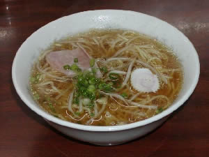

|
ごんな（ラーメン）
|
|
 うまいぶん
|
| 開店日からよく通った店。ええぶんと鳥メシがおいしかった。ある日女店員からスープをサービスされうれしかった。 ［s48卒・男性］ |
| 高2の3学期の学力テストの時だったでしょうか、大雪でテストが延期になり、友達とごんなに寄って帰ると、鬼無に住んでいる友達が、バスが不通になり、我が家に先に到着してた事がありました。つい、この間のことのようですが………。［s44卒・遠藤 隆江］ |
| ラーメン屋の｢ごんな｣のラーメンがとてもなつかしいですね。ギョーザも．．．｢うまいぶん｣がまた食べたいです。 ［s52卒・女性］ |
| いまでも高松に帰ると必ずといっていいほど食べに行きます。高校時代は、うまいぶんにライスが定番で、○○やXXXX（自主規制、内容はご想像にお任せします）で懐があったかい時はええぶんに餃子をつけていました。 ちなみに私のギョーザダレのレシピは醤油、酢、ラー油にねり辛子。当時はそれを当然と思っていましたが、初めて上京した際、ラーメン屋でねり辛子を頼んで友人に不思議がられた思い出があります。 ［s53卒・匿名希望］ |
| 友人達と放課後よく中華料理「ごんな」に行ってぎょうざとチャーハンで何時間もしゃべっていた。 ［s48卒・川野 芳裕］ |
| ラーメンが大嫌いだったのに、先輩に連れられて行った”ごんな”のラーメンはとてもおいしくて食べられました。もう２０年以上食べていませんが、あの澄んだスープは何系の味だったのでしょうか？やはり、うどん系？？ ［s50卒・薮崎 千鶴子］ |
| 在学の頃、ごんなのうまいぶんは70円だったと思います。これに餃子半分というのが高高生の定番。少々フトコロが暖かい時には鳥めしに餃子半分。なつかしいなぁ・・・・・ ［s51卒・谷 政俊］ |
| 帰省時期の盆・暮れには絶対閉まっている「ごんな」。。。どうしても食べたかったので、出張で高松に行ったとき、高松支店長が空港まで送ってくれるというのを「大丈夫です、大丈夫です」と無理矢理振り切り、変な時間にこっそりひとりで食べに行きました。社会人なので見栄を張ってええぶんを食べました。でもやっぱりうまいぶんのあのハムも忘れられません。盆暮れ、開けといてくれ～！ ［s53卒・匿名希望］ |
| ｢ごんな｣のラーメン。｢ええぶん｣と｢うまいぶん｣というメニューはまだ覚えています。 ［s51卒・男性］ |
| ｢ごんな｣のラーメンがなつかしいです。うまいぶん（安いぶん）とええぶん（高いぶん）があって、野菜のいっぱい乗っかった、ええぶんをたべたいなあ．．．と横目で見ながら、うまいぶんを食べた思い出があります。 ［s48卒・女性］ |
●ハガキでリクエストいただいた方は、卒年・性別で掲載させていただきました。ホームページからリクエストいただいた方は、お名前をそのまま掲載しています。不都合がございましたら、web担当宛てにご連絡ください。